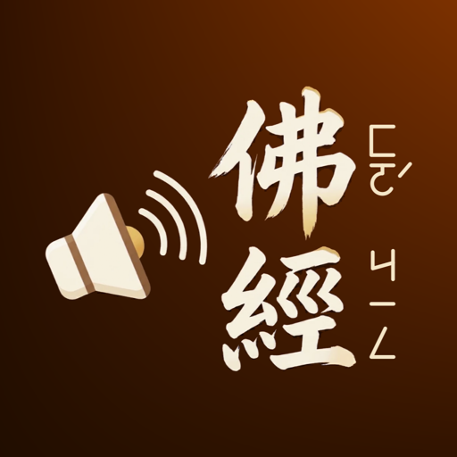

經咒帶念
照注音一字一字帶著念經咒，正在念的字會亮起來。
功能
- 照注音念：每個字都照經文上標的注音發音，咒語的特殊讀音（例如「南無」念 ㄋㄢˊ ㄇㄛˊ）都念得對。
- 直書閱讀：由右往左直排，注音在字旁邊。
- 跟著亮：正在念的字反白、整段標出，畫面自動跟著翻頁。
- 點哪裡念哪裡：點任何一個字就從那一段開始念；「重播」再念一次，「播下段」念下一段。
- 念完停或連續念、目錄與書籤。
- 字可以很大：經文五種大小、按鈕文字三種大小，也可以兩指直接放大。
- 不用網路：用 iPhone 內建語音，不收集任何資料。
目前收錄：楞嚴咒（淨律寺 2011/05 版）。其他經書陸續上架。
常見問題
聲音不夠自然？到 iPhone 的「設定 → 輔助使用 → 朗讀內容 → 聲音 → 中文（台灣）」下載「美佳（高品質）」，再回到 App 的「設定 → 語音」選它。
手機切成靜音還有聲音嗎？有，念經時切成靜音也會出聲。
字太小？到 App 下方「設定」最上面調大，或在經文上用兩指張開放大。
支援與聯絡
有問題或建議，請到 GitHub Issues 留言（請註明「經咒帶念」）。
隱私權政策 / Privacy Policy